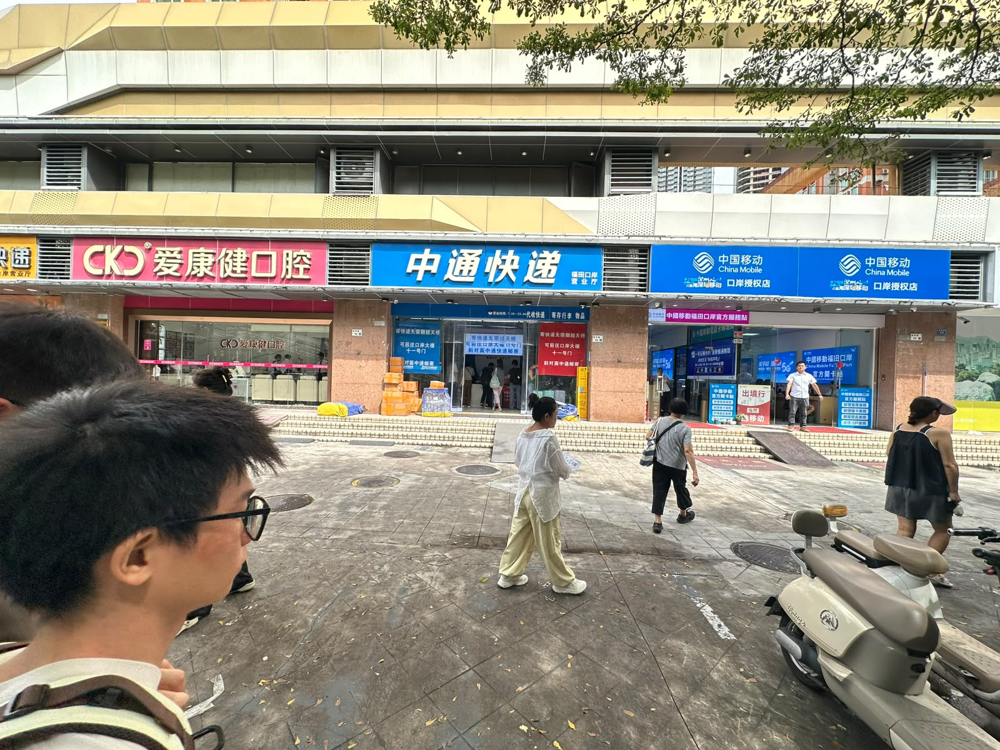
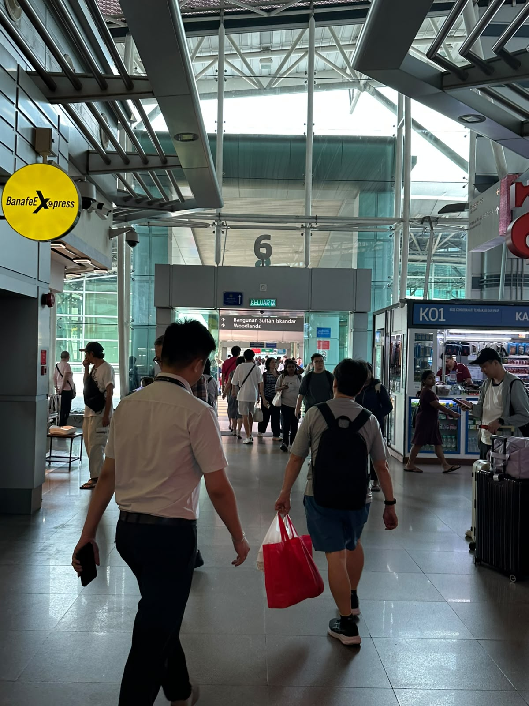

01 / The repair customer
For this repair,
expertise mattered.
Specialist parts and expertise for older equipment were the reason he described crossing.
One reported experience · paraphrasedHong Kong · Shenzhen · Singapore · Johor
A repair. A meal. A move. A connection.
Selected accounts of everyday life across Hong Kong and Shenzhen.
The repair customer sought specialist parts in Shenzhen. The guide moved north. The professional works in Hong Kong and keeps ties in Shenzhen. The store manager crosses for meals and does most shopping in Hong Kong.
01 / The repair customer
Specialist parts and expertise for older equipment were the reason he described crossing.
One reported experience · paraphrased02 / The guide who moved north
She judged the combination to make guiding more workable. Her finances were not audited.
One reported experience · paraphrased03 / The professional with Shenzhen ties
She rents and works in Hong Kong. Property, family, friends and many activities remain in Shenzhen.
One reported experience · paraphrased04 / The Sheung Shui store manager
About monthly visits, mainly for meals; a Fanling home, work in Sheung Shui and most shopping in Hong Kong.
One reported experience · paraphrasedSelected accounts, not population categories. Buildings and connections are explanatory illustration; unknowns stay unplaced. About the research
01 / What is worth crossing for?
Compare the mix of recorded purchases in each place.
Recorded spending among seasoned AlipayHK users: Mainland services 47%, retail 28%, food and beverages 16%; Hong Kong services 12%, retail 58%, food and beverages 29%.
Selective trips. The Sheung Shui manager visited Shenzhen about monthly, mainly for meals, while doing most shopping in Hong Kong. Dining visitors discussed choice, space, price and online alternatives.
Time matters. An expert described a Shenzhen visit as more workable with childcare arranged and half a day available. The Sheung Shui resident cited crowds when describing infrequent crossings.
Different customers. The shop employee described nearby residents; the store manager described local and Mainland customers. Reported crowd changes need comparable footfall data.
Different pressures. The guide weighed lower earnings against lower living costs and preferred work. These accounts explain individual choices, not the cause of the spending shares above.
02 / What help can people find?
Three field photographs. Choose a view, then inspect a detail.

At Futian. Immigration staff directed Jamie to an arrival-form kiosk. Separate help points near the exit offered everyday information and described referrals; their operator was unconfirmed and the referrals were not tested.
Observed and reported. Street signs show advertised services. A property agent separately described restaurants catering to Hong Kong tastes and tuition for Hong Kong-curriculum students. The photographs do not establish their users or outcomes.
03 / What stays connected?
Explore what each person described in Hong Kong and Shenzhen.
The professional works and rents in Hong Kong, with family, friends, property and many activities in Shenzhen. The guide moved to Shenzhen and continues family visits in Hong Kong.
The guide’s account. Friends helped her hear about a qualification opportunity. She said she qualified, later encountered age-related reluctance to offer work, and received help from someone at the organisation.
She described sports, interest groups and food-related activities, and considered Mandarin useful for joining local circles.
The dining visitors. Sports leagues, coaching, volunteering and animal activities were examples of joining in. These examples concerned Hong Kong, although the conversation took place in Shenzhen. Both are reported accounts, not tested interventions.

Singapore–Johor visit · a direction toward WoodlandsSingapore–Johor has different systems and conditions. The questions travel; the answers need local evidence.
Locate the region and its plansAn RTS spending forecast. Compare the two gross flows with the net balance.
Forecast annual additional spending: Singapore consumers in JB, S$1.05 billion; JB consumers in Singapore, S$756 million. Source net: approximately S$290 million.
What comes next
Follow the businesses, services and relationships over time—including the people who stay locally.
What should we investigate next?Go deeper into the fieldwork, evidence and policy context.
Four arrangements · selected accounts · how the material was gathered
Twelve sets of conversation and visit notes, plus two separate expert discussions. The selected accounts are exploratory, not representative.
Ways to organise a cross-border life
These arrangements can overlap. The selected accounts illustrate individual experiences; no commuter was interviewed for the worker-or-student example.
Based mainly on one side; crosses for selected activities.
Moves home from Hong Kong to Shenzhen.
Lives on one side and regularly works or studies on the other.
16,139 daily cross-boundary pupils · official evidence ↗Based in Hong Kong, with property, relationships or activities in Mainland China.
The school figure is for 2024/25; Mainland residence is not necessarily Shenzhen. It is not a worker count or an interviewed account.
This inquiry begins with Hong Kong–Shenzhen and returns to Singapore–Johor with questions to investigate locally.
Businesses, services and relationships · a proposed learning visit
Questions worth exploring
These questions follow from the findings. They are directions for further inquiry, not findings of measured effects.
Follow products, customers and business models, alongside workers’ next jobs and earnings. Household gains and pressures can affect the same person.
Ask how providers identify needs, whether users get the help they seek, and where services can improve.
Explore how work, shared interests and friends help sustain ties and open new circles—and who lacks support.
Explore measurement questions ↗ Consider possible responses ↗
One practical possibility
An association-led visit could bring Singapore retailers and service businesses to Hong Kong and Shenzhen to discuss changing customers and offerings with operators. Promising ideas and difficult or unsuccessful adaptations would both be useful to examine for local relevance.
A proposed learning exchange, not an announced programme or evidence that an adaptation will transfer.
A conditional question · 2024 survey
≈ 1 in 3Around one in three Singapore respondents could envisage buying a Johor Bahru home and retiring there. What services and relationships would people need if more spent extended periods across the border?
Conditional interest among respondents, not observed moves or a share of all Singaporeans. Blackbox Research survey post ↗
Patients, consultations and medical records are different measures
Published programme evidence
A follow-up consultation pilot, medical records and return-referral arrangements offer a separate example. These measures describe different kinds of use.
More than 5,900 eligible HA patients had joined the follow-up consultation pilot by January 2026. Programme use does not establish outcomes.
Two regions · planning ambitions and institutional differences
Generalised locator maps made with Natural Earth. Enable JavaScript to explore the policy documents, or read the source list.
How different research approaches contribute
Selected research covers institutions, expenditure, spatial patterns and everyday healthcare access. These sources use different methods, periods and geographies.
Six views from the Shenzhen field trip
Photographs supplied by Bob and Jamie. Captions describe visible context; pictured people are not identified as research participants.
Loading the field photographs.
Crossings, retail, restaurants, firms and workers
Different series describe different units and periods. None isolates the effect of northbound activity.
Loading economic context.
Official evidence for the work-or-study arrangement
16,139 daily cross-boundary pupils in 2024/25: 388 kindergarten, 2,577 primary and 13,174 secondary. Mainland residence is not necessarily Shenzhen. This is not a worker count.
24 examples · mechanisms, evidence and limits
Reference examples for investigating a demonstrated need. They do not establish which interventions Hong Kong should adopt or whether effects would transfer.
Loading the response collection.
Questions, existing records and evidence gaps
Loading the measurement menu.
Future reading avenues
Future comparisons, not additional findings or evidence of transferable effects.
Loading future reading avenues.
A playable thought experiment
Home stays fixed and routes change for free. Try the rules, then consider what the game leaves out.
Demand, capacity and scores are invented. Real lives involve eligibility, costs and continuing commitments.
Loading the playable illustration.